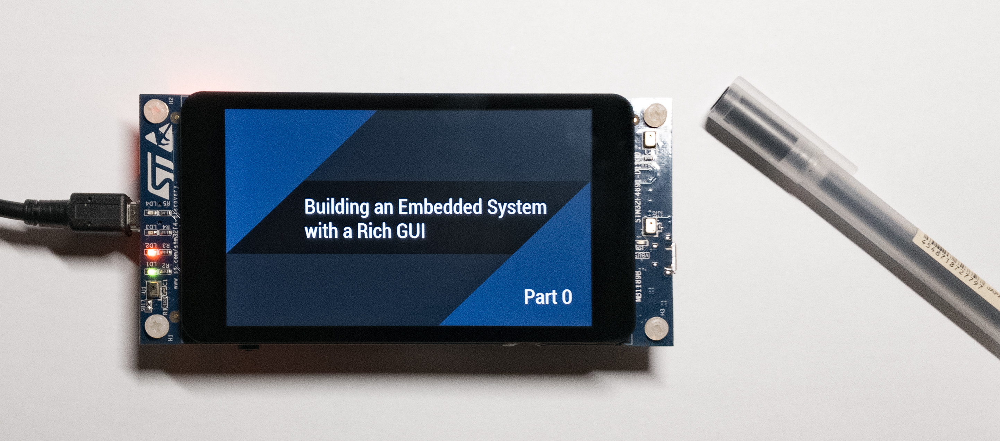

Building an Embedded System with a Rich GUI - Tutorial Part 0 (2020/07/30)
Introduction
In this tutorial, I'd like to introduce you to ST's TouchGFX GUI framework, and get you started on building GUI applications with your own hardware. This is the beginning of a series of posts on TouchGFX and embedded system development. Each post will build on the previous - we'll start from a simple demo using the TouchGFX designer, continuing with a more complex implementation using the built-in Model-View-Presenter pattern, and finally we'll tie it all together with a practical project that interfaces with actual hardware.
What is TouchGFX?
In our smartphone and web app era, people are accustom to using devices with rich and intuitive graphical user interfaces. In many cases, a touchscreen is not only preferred, but expected. TouchGFX is a GUI framework that enables you to develop such interfaces for your products. It is built exclusively for STMicroelectronics family of processors. It features an easy to use drag-and-drop GUI builder tool called the TouchGFX designer that outputs a basic code structure upon which you can build your own application. The code is written in C++, so basic knowledge of the language is a prerequisite (although none will be required for this first tutorial!).
Diving In
To follow along with this first tutorial, you won't any need any hardware yet. The TouchGFX Designer can run a simulation of your code on your local machine, allowing for quick GUI development. However, we'll set up our system for use with an STM32F469i Discovery Board, because we'll be targeting that processor in future tutorials. You'll need:
- About 30 minutes
- A Windows machine (although the framework is not platform dependent, the Designer is Windows-only)
- An account with STMicroelectronics to download the software (sign up here)
- TouchGFX Designer (Download Link)
Optionally, if you want to build with hardware, you also need:
- STM32CubeProgrammer (Download Link)
- STM32F469I Discovery Board
Installation
Unzip the X-Cube-TouchGFX file and run \Utilities\PC_Software\TouchGFXDesigner\TouchGFX-x.xx.msi to install the designer.
If you have a discovery board, STM32CubeProgrammer allows you to flash the application to the hardware. Install it with the default install settings. Of note, it must be installed with the default installation path for the TouchGFX Designer to be able to use it. It may request a driver install - this is normal.
When installation is finished, open the TouchGFX Designer.
Hello World!
Welcome to the TouchGFX Designer! Create a new project targeting the STM32F469I Discovery Board by mousing over the Simulator box, clicking Change. Scroll nearly all the way to the right and click STM32F469I, then click Select. We'll use a Blank UI template. Name your project and click Create.
Target selection when first creating a project. We'll use the STM32F469I in future tutorials, so select it now.
The main TouchGFX window consists of 4 major parts - the left-hand Sidebar, the main Canvas View, the right-hand side Options Box, and the top Menu Bar. In the Sidebar you change tabs to select between displaying a palette of widgets, a list of screens and objects in your application, and any custom containers you've created (more on that in a future post). The main Canvas section shows the view of your application as if you were looking at it on the target screen. The Options box on the left will populate with options when you select an object.
The main TouchGFX Designer user interface.
TouchGFX starts us out with a default screen. An application can have a number of independent screens. We'll start by adding a background to our default screen. Scroll down the widget window in the left Sidebar until you find a Box widget. Drag the box into the Canvas and grab the handles to scale it to the full size of the screen. Notice how the designer snaps your object to points of interest - namely the edges and middle of the screen. You'll notice that because the box is selected, the Options Sidebar has lit up with a few options, such as the widget name (currently box1), its coordinates and size, and the color and opacity. Name your box something meaningful, like "background". Let's change the background color by clicking on the dropdown under Color and selecting your preferred color.
If you're curious that's #FF30343A (a.k.a. "Gunship Grey", at least according to me)
With our background in place, let's add some text. Return to the widget menu of the left sidebar (the tab with the square and the +) and find the Text Area widget. Drag it into the middle of the view. If you select it, you'll find options in the Option Sidebar that let you change the displayed text, the color, the alignment, etc. Change the color to something visible and the text to Hello World! or your test string of choice!
The text is looking a little bit small, so let's change the style. Unfortunately, we can't freely select different fonts and sizes for each textbox like we do in word processors*. This constraint stems from the way that graphics such as font glyphs are stored on resource limited systems. On your personal computer, the shapes and sizes of text are calculated on the fly using equations contained in font files. On most embedded systems the processing power required for this is too high, so the hard work has to be done upfront before the program ever runs. During the compile stage, each glyph that will be displayed on your screen is converted to a static, discrete image and stored with your program. Because of this requirement we have to specify in advance which glyphs we want and how large we want them, so that the compiler knows it needs to include them. These pre-specified sets of fonts are called Typographies. Although this may seem inconvenient, it has the upside of making it easier to maintain a consistent style between elements. For example, if you had a menu bar, all the textboxes in the menu bar could share the same typography. Down the line if you wanted to modify the fonts, all you would have to do is modify the menu font typography and all the elements assigned to it would reflect your changes.
* If we wanted a different font for each textbox we would need to make a typography for each one individually.
TouchGFX supports Unicode, so you can write text in most languages. The trick is to set the typography to a ttf font that supports the characters, such as Meiryo for Japanese. You may have to manually install the font to the TouchGFX/assets/fonts folder in the project source.
You'll notice that by default the TouchGFX designer generates three typographies - default, large and small. We can customize the font and size of each typography by clicking on Texts in the top menu bar, then clicking on the Typographies tab. If you wish, you can add your own.
Changing the typography font and size. Navigate to this page by clicking the Texts button in the Menu bar and then clicking the Typographies tab.
Take this time to change the font and size of the typographies to whatever you would like. I changed the Large typography to Roboto Condensed, at 45 pixel size. The fonts that appear depend on what is available on your computer. Other settings, such as wildcards and fallbacks can be left as they are for now. We'll cover them in a future tutorial, but try and guess what they do based on the explanation of typographies above. (Here's a hint: by default, the TouchGFX designer will only generate glyphs for letters it knows for sure will be required).
When you finish, return to the main Canvas view and select your custom typography for your new text item. You may have to reposition it a little bit if the new typography changes the overall location.
Lets see it in action! Click the Run Simulator button, or if you have the dev board click Run Target. You should see your text front and center on the screen!
"Hello TouchGFX!" -The World, probably
Diving a Little Deeper
Congratulations! You've learned how to do 80% of what you'll normally be doing in the TouchGFX Designer (arranging widgets and setting text)! Let's dive a little deeper.
We'll continue by adding a button to our screen. Find the button section, then drag a Button (or Button with Label, or Button with Icon) into the view. You'll see that the button has a few more options than the box, namely the images that it uses in its pressed and unpressed state, as well as the text (if you chose a label button) or an icon (if you chose an icon button).
Let's make our button do something when its clicked, like fade in our hello world text. You can achieve some basic interactive functionality using the TouchGFX Designer Interactions tab. Access the Interactions menu it by clicking the second tab on the right-hand Options box. Click Add Interaction. For the first interaction we'll tell the application to hide our text when we start the program. Set the trigger to be Screen is Entered. In the action pane, we'll choose "Fade Widget". We'll select our hello world text object as the target, setting its opacity to 0 alpha over a duration of 0ms (instantly).
Add a second interaction, and choose the trigger to be Button is Clicked. Your button should be automatically selected (if you've added multiple buttons you can choose which one to bind the interaction to in the "Choose Clicked Source" dropdown. Set the action to Fade Widget again, targeting the text object, but this time set the alpha to 255, over a duration of 1000ms. The Easing setting will determine the rate that the alpha will change over the course of the fade. A great site to visualize these settings is easings.net.
Fade Out, Fade In. Fade Out, Fade In. Fade Out...
The Tip of the Iceberg
You've successfully set up the TouchGFX designer and created a basic GUI application! There is so much more we can do - style our UI using the existing widgets, creating our own UI elements with custom containers, adding interactive functionality between multiple screens, interfacing with a backend system or hardware - the list goes on. In the next post we'll dive deeper into our application and examine the code that will bring our system to life. In the meantime, try playing around with the different widgets and interactions available and see what you can create!
In case the video doesn't autoplay, the play button IS NOT a real play button. Clicking it won't do anything! In retrospect I could have picked a better icon for this demonstration...
Conclusion and Footnotes
Thanks for reading! I hope this post was helpful in gettings your feet wet with TouchGFX. If you have any thoughts you'd like to share about your experience, tweet @mkafarowski on Twitter.
Here are some notes that may be of interest/use to you at this stage.
-
Animations will appear MUCH smoother on the simulator. Keep this in mind when designing time delays. There are ways to accelerate animations, such as using the STM32 DMA2D (Chrome-ART) accelerator, however this is a fairly advanced topic. The less of the screen that needs to be redrawn, the smoother the animation will be.
-
I've encounted a bug where the simulator will work fine, but the target will refuse to display the screen on startup. Strangely, adding an invisible button tends to fix this issue, and I'm not sure why.
-
If you have a font you would like to use that doesn't show up in the list on the typographies page, place the TTF file in the TouchGFX/assets/fonts/ folder in the root of the project.
-
The TouchGFX designer outputs project files compatible with a number of different IDEs. If you want to get a head start on further development, download STM32CubeIDE and explore the code.
See you at the next tutorial!
Back To Blog© Michael Kafarowski 2020
 Site built completely from scratch and with love by Michael Kafarowski!
Site built completely from scratch and with love by Michael Kafarowski!